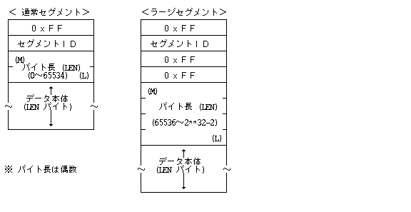
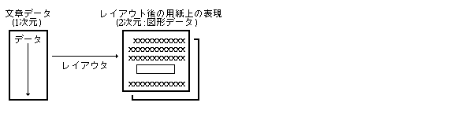
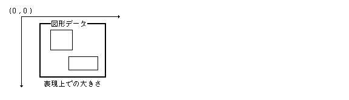
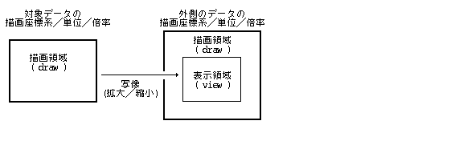
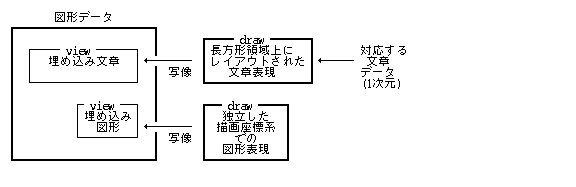
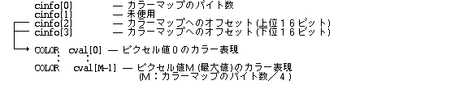

Ця специфікація , TAD ( TRON APPLICATION DATABUS ) стосовно та та , BTRON Реальний об'єкт (Real Object), Віртуальний об'єкт (Virtual Object), Наліпка (Fusene) , TAD , , стосовно .
, BTRON Система (System), Файл (File)Система (System) та , TRON Код (Code) стосовно та та .
TAD ( TRON APPLICATION DATABUS ) Реальний об'єкт (Real Object) , BTRON Реальний об'єкт (Real Object) ( Файл (File) ) також існує.
BTRON Реальний об'єкт (Real Object) ( Файл (File) ) , .
Реальний об'єкт (Real Object) (Файл (File)) , , , BTRON Файл (File)Система (System) та .
Реальний об'єкт (Real Object) додаток Тип (Type) також ,
Піктограма (Pictogram) 1 1 .
, , Пристрій (Device)Реальний об'єкт (Real Object) також .
Реальний об'єкт (Real Object) , Код (Code) складається з 1-вимірного ланцюжка, Код (Code) , Тип запису (Record Type) , .
BTRONРеальний об'єкт (Real Object)(Файл (File)) Код (Code) , Код (Code) , Тип запису (Record Type) , Правила структури даних. Код (Code) Тип (Type) , Код (Code) для , .
Тип запису (Record Type) та , Правила структури даних .
| Тип запису (Record Type) | Правила структури даних | |
|---|---|---|
| 0 | Запис посилання (Link Record) | Стандартні типи даних C |
| 1 | TAD Головний запис (Main Record) | Формат та структура TAD |
| 2 | TAD Запис коментаря (Annotation Record) | Формат та структура TAD |
| 3 | TAD Допоміжний запис (Auxiliary Record) | Формат та структура TAD |
| 4 | Зарезервований запис | − |
| 5 | Запис налаштувальної вкладки (Setting Fusen) | Формат та структура TAD |
| 6 | Запис специфічної вкладки (Specified Fusen) | Формат та структура TAD |
| 7 | Запис функціональної вкладки (Functional Fusen) | Формат та структура TAD |
| 8 | Запис функціональної вкладки (Functional Fusen) | Формат та структура TAD |
| 9 | Запис виконуваної програми (Executable Record) | Стандартний формат об'єктного коду |
| 10 | Контей даних (Data Box)Код (Code) | Контей даних (Data Box)Формат / Синтаксис |
| 11 | Запис шрифтових даних (Font Data Record) | Стандартний формат шрифтів |
| 12 | Запис словникових даних (Dictionary Record) | Стандартний формат словника |
| 13 | Зарезервований запис | − |
| 14 | Зарезервований запис | − |
| 15 | Запис системних даних (System Data Record) | Визначення системного додатка |
| 16〜31 | Запис прикладного додатка (Application Record) | Приватне визначення додатка |
Реальний об'єкт (Real Object) є, TAD Формат / Синтаксис існує. та .
Реальний об'єкт (Real Object) та є, TAD Формат / Синтаксис існує. Файл (File) довідкові дані (Help), дані про авторські права (Copyright) , не обробляється базовим редактором.
Реальний об'єкт (Real Object) є, TAD Формат / Синтаксис існує. додаток , не обробляється базовим редактором.
Реальний об'єкт (Real Object) Наліпка (Fusene) існує.
Реальний об'єкт (Real Object) Наліпка (Fusene) існує.
Реальний об'єкт (Real Object) Наліпка (Fusene) існує.
Реальний об'єкт (Real Object) та Табл. , Наліпка (Fusene) існує.
Стандартний формат об'єктного коду є, Тип (Type) CPU Тип (Type) .
| 0x100〜0x13F | Сімейство TRONCHIP | 0x00 | TRONCHIP32 |
| 0x140〜0x14F | Сімейство 68000 | 0x40 | 68000 |
| 0x41 | 68010 | ||
| 0x42 | 68020 | ||
| 0x150〜0x15F | Сімейство NS32000 | 0x50 | 32032 |
| 0x160〜0x16F | Сімейство x86 | 0x60 | 8086 / 8088 |
| 0x61 | 80186 | ||
| 0x62 | 80286 | ||
| 0x63 | 80386 | ||
| 0x170〜0x17F | Сімейство V-Series |
Контей даних (Data Box) є, Менеджер даних (Data Manager) Формат / Синтаксис існує.
Шрифт (Font)Формат / Синтаксис.
Формат / Синтаксис.
Система (System) Система (System)Формат / Синтаксис існує.
додаток Формат / Синтаксис існує.
Формат та структура TAD , BTRON Файл (File) TAD Код (Code) також існує.
Формат та структура TAD , Файл (File) Формат / Синтаксис та та також , Лоток (Tray), додаток для також .
Формат та структура TAD , та є, , Сегменти фіксованої довжини та , Сегменти змінної довжини існує. , TRON Код (Code) , Формат та структура TAD TRON Код (Code) також існує та .
TRON Код (Code) та , Код (Code) також є, також .
| Код (Code) | : 1 2Код (Code) |
| Управляючі коди | : (0x00〜0x20) 1Код (Code) |
| Коди зміни мовного скрипту | : (0xFE) Код (Code) |
| Спеціальні коди | : (0xFF)(0x21〜0x7E) 2Код (Code) |
, Формат та структура TAD , Управляючі коди .
| Нікчемний код (TNULL) | 0x00 |
| Табуляція (TAB) | 0x09 |
| Новий абзац (NL) | 0x0A |
| Нова колонка | 0x0B |
| Нова сторінка | 0x0C |
| Новий рядок (CR) | 0x0D |
| Розділювач (SP / Пробіл) | 0x20 |
TRON Код (Code) та
TRON є,
(0xFF), 2 ,
(0x80〜0xFE) .
2 Табл. ,
ID та .
ID ,
Формат / Синтаксис та ,
та
2 Формат / Синтаксис , ,
65,536 випадок .
та "0"
.
Формат / Синтаксис та .
Мал. Сегменти змінної довжини Формат / Синтаксис .

Сегменти змінної довжини та також .
Тип (Type) ID сегмента (Segment ID) () (0x80〜0x9F) Наліпка (Fusene) TS_Txxxx (0xA0〜0xAF) Мал. TS_Fxxxx (0xB0〜0xBF) () (0xC0〜0xDF) TS_INFO (0xE0) Сегмент початку тексту (TS_TBGN) TS_TEXT (0xE1) Сегмент завершення тексту (TS_TEND) TS_TEXTEND (0xE2) Сегмент початку графіки (TS_GBGN) TS_FIG (0xE3) Сегмент завершення графіки (TS_GEND) TS_FIGEND (0xE4) Сегмент растру (TS_IMAGE) TS_IMAGE (0xE5) Сегмент Віртуального об'єкта (TS_VOBJ) TS_VOBJ (0xE6) Сегмент специфічної вкладки (TS_DFUSEN) TS_DFUSEN (0xE7) Сегмент функціональної вкладки (TS_FFUSEN) TS_FFUSEN (0xE8) Сегмент налаштувальної вкладки (TS_SFUSEN) TS_SFUSEN (0xE9) () (0xEA 〜 0xFE)
TAD , Текстові дані та , Графічні дані .
Текстові дані 1 та також , Табл. існує. Текстові дані 々 2 також існує , 1 , та Табл. .
Текстові дані , Текстові дані 2 ( ) Табл. також , також є, Текстові дані та , та 2 Табл. Табл. також .

Графічні дані 2 та також , 2 Табл. існує. Графічні дані 々 2 та .
Графічні дані ( 0, 0 ) та , / 2 ( ) 1 Табл. також , , , та . 0 〜 32,767 існує.
Графічні дані 2 ( ) Табл. є, Табл. також .

Текстові дані та Графічні дані можливе вкладення (Nesting) є, , Текстові даніГрафічні дані . Текстові дані, Графічні дані , Текстові дані, Графічні дані та також .
( / Мал. ) , та , , також . також , додаток та .
( Мал. / ) , , також також та . , , . , , стосовно , , також . , , .
: Графічні дані A Графічні дані B -- батьківська область видимості (Outer Scope) A Графічні дані C -- батьківська область видимості (Outer Scope) A Графічні дані D -- батьківська область видимості (Outer Scope) C, A Текстові дані E -- батьківська область видимості (Outer Scope) Текстові дані F -- батьківська область видимості (Outer Scope) E Графічні дані G -- батьківська область видимості (Outer Scope)
( ) / Графічні дані , .
Графічні дані та , для , , та також . Область малювання (Draw Region) відсікається (Clipping), Графічні дані .
.
Графічні дані Текстові дані ,
Текстові дані ,
.
Текстові дані Текстові дані випадок , .
Область малювання (Draw Region) ,
1 cm 1 inch .
Текстові дані випадок , Графічні дані, Область відображення (View Region) ,
.
Одиниці координатної системи (Units) 0 випадок , є,
та існує та .
.
Область малювання (Draw Region) Табл. Область малювання (Draw Region) та .
, Область відображення (View Region) / .
Текстові дані , .
Область відображення (View Region) / / та ,
Область малювання (Draw Region) / / ,
Область малювання (Draw Region) Табл. масштабується (збільшення або зменшення)Область відображення (View Region) .

Графічні дані Текстові дані , Область малювання (Draw Region) та та Табл. , 2 та . , , , Текстові дані , .
Графічні дані Графічні дані , / , , Мал. для .
Текстові дані Текстові дані , Одиниці координатної системи (Units) , , , Текстові дані також 1 , . 2 Табл. та , Графічні дані Текстові дані та існує.

, ( ) Растрове зображення (Bitmap)Формат / Синтаксис Табл. є, , Табл. .
, 1 та має , TAD та , 1 та , Графічні дані, Текстові дані 1 та .
TAD , BNFТабл. .
| 【TAD 】 | ::= | 《Елемент даних》【TAD 】 |
| 【TAD 】 | ::= | 《Текстові дані》｜《Графічні дані》 |
| 《Текстові дані》 | ::= | 《Сегмент початку тексту (TS_TBGN)》《Сегмент завершення тексту (TS_TEND)》 |
| ::= | 《Елемент даних》｜ | |
| ::= | 【Код (Code)】｜ | |
| 《Наліпка (Fusene)》｜ | ||
| 《Графічні дані》｜ | ||
| 《Текстові дані》｜ | ||
| 《Сегмент растру (TS_IMAGE)》｜ | ||
| 《Сегмент Віртуального об'єкта (TS_VOBJ)》｜ | ||
| 《Сегмент специфічної вкладки (TS_DFUSEN)》｜ | ||
| 《Сегмент функціональної вкладки (TS_FFUSEN)》 | ||
| 【Код (Code)】 | ::= | 《Звичайні коди символів》｜ |
| 《Управляючі коди》｜ | ||
| 《Коди зміни мовного скрипту》｜ | ||
| 《Код (Code)》 | ||
| 《Графічні дані》 | ::= | 《Сегмент початку графіки (TS_GBGN)》【Мал. 】《Сегмент завершення графіки (TS_GEND)》 |
| 【Мал. 】 | ::= | 《Елемент даних》｜【Мал. 】【Мал. 】 |
| 【Мал. 】 | ::= | 《Мал. 》｜ |
| 《Текстові дані》｜ | ||
| 《Графічні дані》｜ | ||
| 《Сегмент растру (TS_IMAGE)》｜ | ||
| 《Сегмент Віртуального об'єкта (TS_VOBJ)》｜ | ||
| 《Сегмент специфічної вкладки (TS_DFUSEN)》｜ | ||
| 《Сегмент функціональної вкладки (TS_FFUSEN)》 |
, TAD , Наліпка (Fusene) стосовно 4 , Мал. стосовно 5 .
, Формат / Синтаксис .
ID : -- ID сегмента (Segment ID) . LEN : -- , "〜" . DATA: -- .
, , Табл. . 8 , Формат / Синтаксис існує.
typedef struct {
H h --
H v --
} PNT;
typedef struct {
DBYTE left --
DBYTE top --
DBYTE right --
DBYTE bottom --
} RECT;

>0: 1 cm
<0: 1 inch
=0: ( та )
: 400 -- 1 / 400 cm
-240 -- 1 / 240 inch
UUSS SSSS SSSS SSSS
U:
0:
1: 1/20 ( 1 / 80 mm ) .
2: 1/20 ( 1 / 1440 inch ) .
3:
S: U Розмір (Size). 0 випадок
та .
1NNN NNNN NNNN NNNN --
0AAA AAAA BBBB BBBB --
: Одиниці координатної системи (Units) ( N )
: × ( A / B )
( B = 0 1 та )
AAAA AAAA BBBB BBBB A / B та ( B = 0 1 та )
TAD для , Реальний об'єкт (Real Object) 1 TAD випадок , TAD ( / Графічні дані ) . та має , . та , , та .
ID : TS_INFO --
LEN : 〜
DATA: UH subid -- ID
UH sublen --
UH data[] -- (sublen )
: :
$lt; >
subid: 0 -- TAD
sublen: 2
data: UH ver -- Формат / Синтаксис 3 BCD Код (Code)
0000 AAAA BBBB CCCC : A.BC
:1.2 та AAAA = 0001
BBBB = 0010
CCCC = 0000
subid: 1〜 --
Текстові дані Табл. , Сегмент початку тексту (TS_TBGN) та Сегмент завершення тексту (TS_TEND) 1 Текстові дані та .
ID : TS_TEXT -- Сегмент початку тексту (TS_TBGN)
LEN : 24
DATA: RECT view -- Область відображення (View Region)
RECT draw -- Область малювання (Draw Region)
UNITS h_unit --
UNITS v_unit --
UH lang --
UH bgpat -- ID
ID : TS_TEXTEND -- Сегмент завершення тексту (TS_TEND)
LEN : 0
DATA:
| : | 0x0021 |
Графічні дані Табл. , Сегмент початку графіки (TS_GBGN) та Сегмент завершення графіки (TS_GEND) 1 Графічні дані та .
ID : TS_FIG -- Сегмент початку графіки (TS_GBGN)
LEN : 24
DATA: RECT view -- Область відображення (View Region)
RECT draw -- Область малювання (Draw Region)
UNITS h_unit --
UNITS v_unit --
W ratio --
ID : TS_FIGEND -- Сегмент завершення графіки (TS_GEND)
LEN : 0
DATA:
Сегмент растру (TS_IMAGE) , Табл. є, TAD Текстові дані, Графічні дані . Сегмент растру (TS_IMAGE) , , BTRON Растрове зображення (Bitmap)Формат / Синтаксис Табл. .

xxxx xxxx Ixxx PRRR
( Табл. )
, .
( cinfo[0] ) = 0
випадок ,
та .

Табл. ( )
Табл. .
cinfo[0] = 0 випадок ,
Табл. та .
cinfo[0] -- та cinfo[1] -- cinfo[2] -- cinfo[3] --
cinfo[0] -- та cinfo[1] -- та cinfo[2] -- та cinfo[3] --
cinfo[0] -- та cinfo[1] -- та cinfo[2] -- та cinfo[3] -- та
,
LSB 0 та .
та , Табл. ,
....BBBBGGGGGGRRRRRR випадок ,
cinfo[0] → 0x0006 cinfo[1] → 0x0606 cinfo[2] → 0x0c04та .
UH ext_id -- Тип (Type) ( ext_id MSB = 0 ) UH len -- UB data[] -- ( len )
UH ext_id -- Тип (Type)( ext_id MSB = 1 ) UH len -- UW offset --
len : 4 data: COLOR bgcol --

Сегмент Віртуального об'єкта (TS_VOBJ) , Віртуальний об'єкт (Virtual Object) є, TAD Текстові дані, Графічні дані , Реальний об'єкт (Real Object) . Сегмент Віртуального об'єкта (TS_VOBJ) , Віртуальний об'єкт (Virtual Object) Табл. , додаток для . Віртуальний об'єкт (Virtual Object) , ( Віртуальний об'єкт (Virtual Object) ) Код (Code) та , Реальний об'єкт (Real Object) від 1 1 Сегмент Віртуального об'єкта (TS_VOBJ) та . Код (Code) BTRON Файл (File) Файл (File) , .
Сегмент Віртуального об'єкта (TS_VOBJ)Запис посилання (Link Record) , BTRONМенеджер реальних та віртуальних об'єктів , , додаток .
ID : TS_VOBJ -- Сегмент Віртуального об'єкта (TS_VOBJ)
LEN : 〜
DATA: RECT view -- Область відображення (View Region)
H height -- Віртуальний об'єкт (Virtual Object)
CHSIZE chsz -- Розмір (Size)
COLOR frcol --
COLOR chcol --
COLOR tbcol --
COLOR bgcol --
UH dlen --
UB data[dlen] -- ( dlen )
Сегмент функціональної вкладки (TS_FFUSEN) ,
додаток Параметри також ,
Наліпка (Fusene) Табл. також .
, Сегмент функціональної вкладки (TS_FFUSEN) ,
Запис функціональної вкладки (Functional Fusen) Запис функціональної вкладки (Functional Fusen) та .
Сегмент функціональної вкладки (TS_FFUSEN) Запис функціональної вкладки (Functional Fusen)
Запис функціональної вкладки (Functional Fusen) та ,
ID, 0xFF,
Код (Code) DATA та .
ID та , Тип запису (Record Type) та Код (Code) .
ID : TS_FFUSEN -- Сегмент функціональної вкладки (TS_FFUSEN)
LEN : 〜
DATA: RECT view -- Область відображення (View Region)
CHSIZE chsz -- Розмір (Size)
COLOR frcol --
COLOR chcol --
COLOR tbcol --
UH pict -- Піктограма (Pictogram) / Тип (Type)
UH appl[3] -- додаток ID
UB name[32] -- Наліпка (Fusene)
UB type[32] -- Типи даних
UH dlen --
UB data[dlen] -- ( dlen )
Сегмент специфічної вкладки (TS_DFUSEN) , TAD , додаток та існує.
1 Сегмент специфічної вкладки (TS_DFUSEN)
Запис специфічної вкладки (Specified Fusen) та та .
Запис специфічної вкладки (Specified Fusen) 1 Сегмент специфічної вкладки (TS_DFUSEN) також ,
ID, 0xFF,
та .
, Сегмент Віртуального об'єкта (TS_VOBJ) та ,
Сегмент функціональної вкладки (TS_FFUSEN) та , UW та .
ID : TS_DFUSEN -- Сегмент специфічної вкладки (TS_DFUSEN)
LEN : 〜
DATA: RECT view -- Область відображення (View Region)
CHSIZE chsz -- Розмір (Size)
COLOR frcol --
COLOR chcol --
COLOR tbcol --
UH pict -- Піктограма (Pictogram) / Тип (Type)
UH appl[3] -- додаток ID
UB name[32] -- Наліпка (Fusene)
UW dlen --
UB dat[dlen] -- ( dlen )